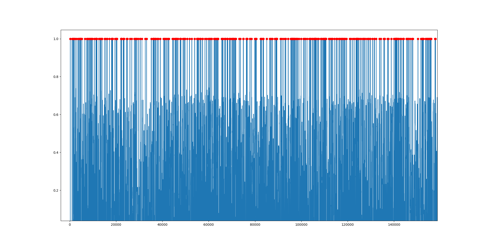
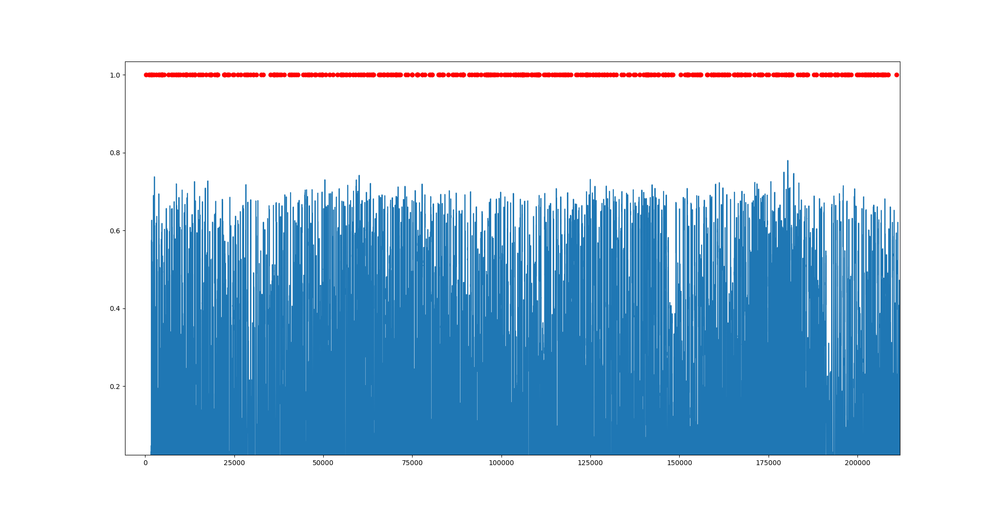

<div class="section-container">
    <div class="container">
      <div class="row">
        <div class="col-xs-12">
          
          <div class="card-container">
            <div class="text-center">
              <h1 class="h2">1D Median Filter Implementation for Degraded Sounds</h1>
            </div>
            <p>
                Project has been done for computational methods module. 1D median filter implementation done in Python3. 
                This filter can reconstruct degraded sounds. Also, GitHub repo contains scripts for degradation and determining the position of degradation processes.
                <br/>
                Codes can be found in <a href="https://github.com/alicamdal/median_filter">here</a>
            </p>
          </div>
        </div>
          <div class="col-xs-12">
            
            <p>As can be seen in above, degraded .wav file has red dots which are distortions. Those points cause clicks on sound.</p>
          </div>
          <div class="col-xs-12">
            
            <p>As can be seen in above, after median filter there is no distortion. It shows that the median filter works properly.</p>
          </div>
          
      </div>
    </div>
  </div>
  
  